Chapitre 6 Les graphiques avec R
6.1 Gestion des graphiques sous RStudio
RStudio possède une fenêtre graphique intégrée où les graphiques peuvent être affichés. Cette fenêtre peut être agrandie, réduite ou mise en plein écran, et permet également de zoomer sur des parties spécifiques du graphique. Cette fenêtre permet également d’enregistrer le graphique dans différents formats de fichiers, tels que PNG, PDF, JPEG, SVG, etc.

Affichage d’un graphique sous RStudio!
On peut aussi, avant l’appel à la fonction graphique, ouvrir une nouvelle fenêtre graphique avec la fonction x11() qui fonctionne sur Linux et Windows ou son équivalent windows() (Windows uniquement), ou encore quartz() sous MacOS. Le graphique s’affichera toujours dans la dernière fenêtre graphique ouverte qui devient le périphérique (device) actif.
On peut également ouvrir directement un fichier graphique avec la fonction pdf(), ou jpeg()… Taper ?Devices pour connaître les différents périphériques utilisables.
Dans RStudio, la fonction dev.new() ouvre un nouveau périphérique graphique. La fonction dev.set() permet de sélectionner un périphérique graphique existant. Elle peut être utilisée pour basculer entre les périphériques graphiques ouverts. Par exemple, si vous avez deux périphériques graphiques ouverts, vous pouvez utiliser dev.set(1) pour sélectionner le premier périphérique et dev.set(2) pour sélectionner le deuxième périphérique. La fonction dev.off() ferme le périphérique graphique actif. Cela peut être utile si vous avez plusieurs fenêtres graphiques ouvertes et que vous souhaitez en fermer une.
Il est également possible de sauvegarder les graphiques créés dans RStudio en utilisant la fonction dev.copy(). Cette fonction copie le graphique actif vers un périphérique spécifié, tel qu’un fichier PDF ou une image PNG. Par exemple, dev.copy(pdf, “myplot.pdf”) copiera le graphique actif dans un fichier PDF nommé “plot1.pdf”.
X11()
x <- seq(1,30,0.1)
y <- sin(x)
plot(x,y, type="p")
dev.copy(pdf, "plot1.pdf")
dev.off()Enfin, il est possible de personnaliser la sortie graphique en modifiant les options de périphériques graphiques. Par exemple, vous pouvez spécifier la taille de la fenêtre graphique avec options(“dev.size” = c(7, 5)) pour une fenêtre de 7 pouces de large et 5 pouces de haut. Vous pouvez également spécifier le type de périphérique graphique à utiliser par défaut avec options(“device” = “pdf”).
6.2 Quelques fonctions graphiques
6.2.1 La fonction plot()
La fonction plot() est une fonction de base de R qui permet de créer des graphiques. Elle est très versatile et permet de créer différents types de graphiques en fonction des arguments passés en entrée. Voici quelques exemples de graphiques que l’on peut créer avec la fonction plot():
Graphique de dispersion (scatterplot):
Un graphique de dispersion permet de visualiser la relation entre deux variables continues. On peut créer un tel graphique avec plot() en passant en entrée les valeurs de la première variable sur l’axe des x et les valeurs de la deuxième variable sur l’axe des y. Par exemple:
x <- c(1, 2, 3, 4, 5) y <- c(2, 4, 6, 8, 10) plot(x, y)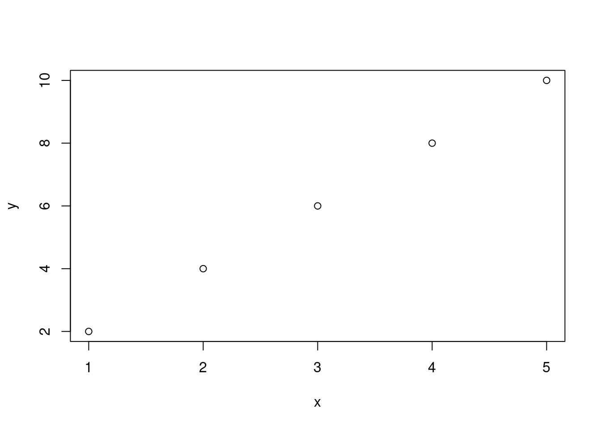
Graphique de ligne:
Un graphique de ligne permet de visualiser l’évolution d’une variable en fonction d’une autre variable (souvent une variable temporelle). On peut créer un tel graphique avec
plot()en passant en entrée les valeurs de la première variable sur l’axe des x et les valeurs de la deuxième variable sur l’axe des y, et en spécifiant l’option type=“l”. Par exemple:x <- c(1, 2, 3, 4, 5) y <- c(2, 4, 6, 8, 10) plot(x, y, type="l")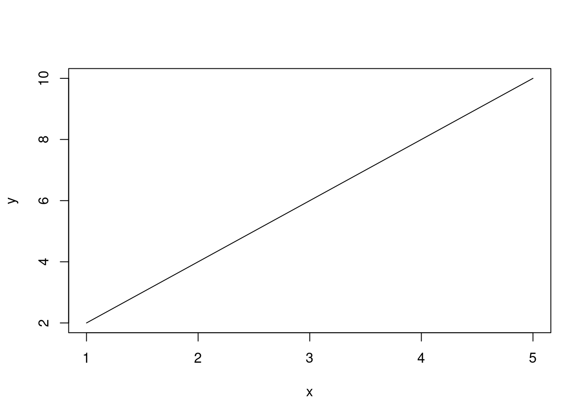
Graphique en boîte (boxplot):
Un graphique en boîte permet de visualiser la distribution d’une variable quantitative en fonction d’une variable qualitative. On peut créer un tel graphique avec
plot()en passant en entrée la variable quantitative et la variable qualitative sous forme de facteur, et en spécifiant l’option type=“b”. Par exemple:x <- rnorm(100) y <- factor(rep(c("A", "B"), each=50)) plot(y, x, type="b")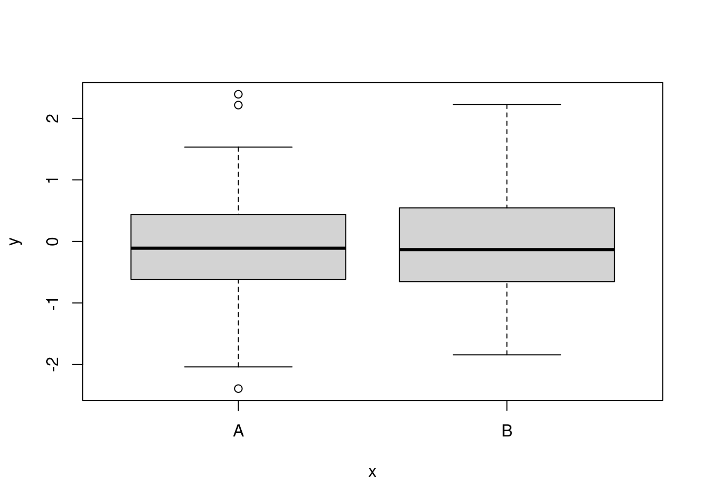
6.2.2 La fonction pairs()
La fonction pairs() permet de créer une matrice de nuages de points pour visualiser les relations entre plusieurs variables dans un ensemble de données. Elle prend en entrée une matrice ou un data frame contenant les variables à afficher et affiche une matrice de nuages de points où chaque case représente la relation entre deux variables.
Par exemple, supposons que nous avons un data.frame appelé iris contenant les mesures de longueur et de largeur des pétales et des sépales pour trois espèces de fleurs. Pour afficher une matrice de nuages de points pour toutes les combinaisons possibles de ces quatre variables, nous pouvons utiliser la fonction pairs() comme suit:
# Charger le jeu de données iris
data("iris")
# Vecteur de couleurs pour chaque espèce
cols <- c("red", "green", "blue")
# Utiliser la fonction pairs() avec l'argument col pour colorer chaque point en fonction de l'espèce correspondante
pairs(iris[,1:4], col = cols[iris$Species])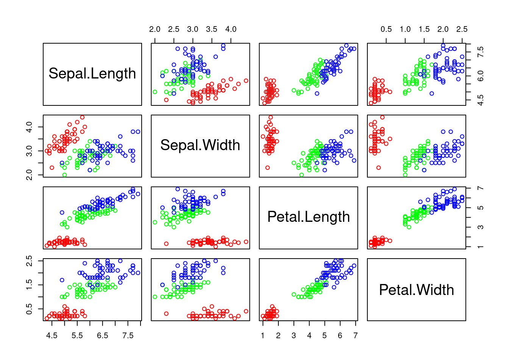
Cela va afficher une matrice de 12 nuages de points, montrant les relations entre chaque paire de variables.
Ici, nous avons défini le vecteur cols pour contenir une couleur pour chaque espèce (red pour Setosa, green pour Versicolor et blue pour Virginica). Ensuite, nous avons utilisé l’argument col avec le vecteur de couleurs correspondant à chaque espèce (cols[iris$Species]) pour colorer chaque point en fonction de l’espèce correspondante.
6.2.3 La fonction pie()
La fonction pie permet de représenter graphiquement des proportions dans un graphique circulaire.
x <- c(0.2, 0.3, 0.1, 0.4)
pie(x)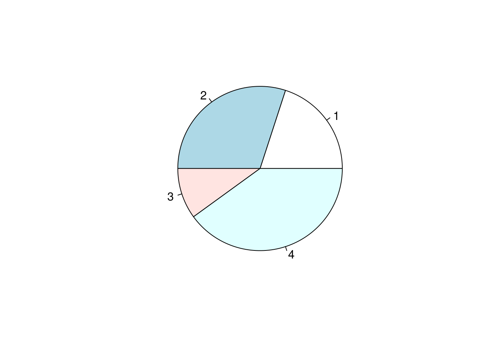
Le graphique qui en résulte présente un cercle divisé en quatre sections représentant chacune une proportion de l’ensemble.
6.2.4 La fonction hist()
La fonction hist() en R est utilisée pour créer un histogramme, qui est un type de graphique qui représente la distribution des valeurs numériques d’un vecteur. L’histogramme est un graphique en barres, où chaque barre représente une plage de valeurs, appelée bin ou classe, et la hauteur de la barre représente le nombre de valeurs dans cette plage.
La fonction hist() prend en entrée un vecteur de données numériques et peut également accepter des arguments optionnels pour personnaliser le graphique, tels que le nombre de classes (bins) souhaité, les couleurs des barres, la couleur de fond, les étiquettes des axes, etc.
Voici un exemple d’utilisation de la fonction “hist()” pour créer un histogramme à partir d’un vecteur de données numériques “x”:
# Créer un vecteur de données
x <- c(3, 5, 6, 7, 8, 9, 9, 10, 11, 12, 14, 15, 16, 17, 18, 19, 20)
# Créer un histogramme avec 5 classes
hist(x, breaks = 5, main = "Histogramme de x", xlab = "Valeur de x", ylab = "Fréquence")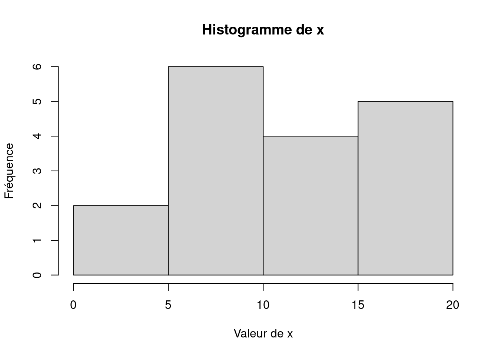
Dans cet exemple, la fonction hist() crée un histogramme avec 5 classes en utilisant le vecteur “x”, et l’option breaks. Les options main, xlab, ylab sont utilisées pour ajouter des étiquettes de titre et d’axes au graphique.
A la place des fréquences, on peut afficher des densités avec l’option freq=F. On peut également ajouter une courbe de densité en utilisant la fonction lines() par-dessus la fonction de densité density().
# Créer un vecteur de données
x <- c(3, 5, 6, 7, 8, 9, 9, 10, 11, 12, 14, 15, 16, 17, 18, 19, 20)
# Créer un histogramme avec 5 classes
hist(x, breaks = 5, freq=F, main = "Histogramme de x", ylab = "Densité", xlab = "Valeur de x")
lines(density(x), col="green")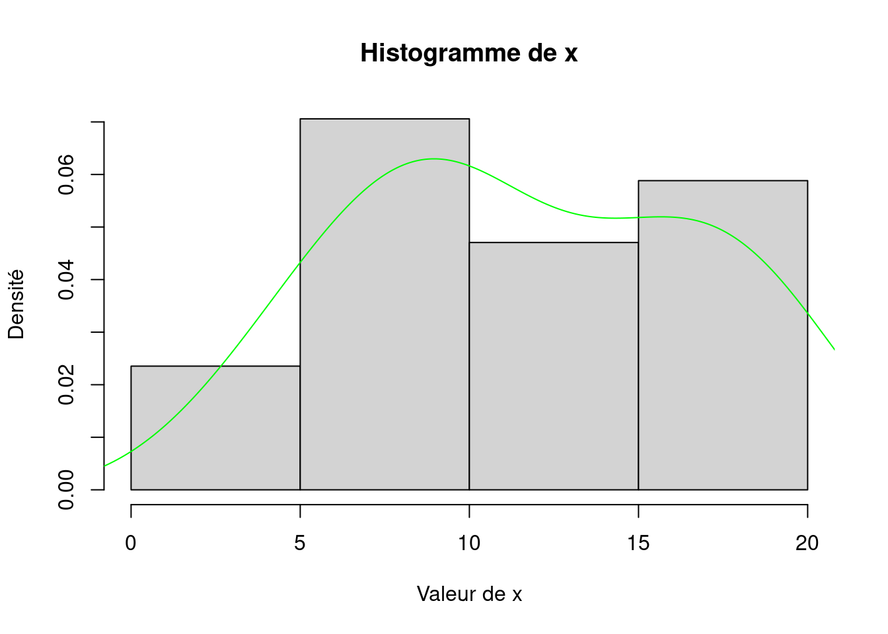
On peut récupérer plus d’informations sur l’histogramme en affichant le résultat de la fonction hist.
# Créer un vecteur de données
x <- c(3, 5, 6, 7, 8, 9, 9, 10, 11, 12, 14, 15, 16, 17, 18, 19, 20)
# Créer un histogramme avec 5 classes
hist <- hist(x, breaks = 5, freq=F, main = "Histogramme de x", ylab = "Densité", xlab = "Valeur de x")hist## $breaks
## [1] 0 5 10 15 20
##
## $counts
## [1] 2 6 4 5
##
## $density
## [1] 0.02352941 0.07058824 0.04705882 0.05882353
##
## $mids
## [1] 2.5 7.5 12.5 17.5
##
## $xname
## [1] "x"
##
## $equidist
## [1] TRUE
##
## attr(,"class")
## [1] "histogram"Définition des valeurs sorties:
$breaks: les bornes des intervalles
$counts: le nombre de valeurs par intervalle
$density: valeurs de la fonction de densité
$mids: valeur centrale des intervalles
$xname: nom de la variable x, tel qu’il est affiché sur le graphe
$equidist: vrai si les intervalles sont équidistants
6.2.5 La fonction barplot()
La fonction barplot() est utilisée pour créer un graphique à barres, également appelé un diagramme à barres. Le diagramme à barres est un graphique qui affiche des données catégorielles sous forme de barres rectangulaires, où la hauteur de chaque barre représente une mesure quantitative associée à cette catégorie.
La fonction barplot() prend en entrée un vecteur ou une matrice de données, où chaque colonne représente une catégorie et chaque ligne représente une mesure quantitative pour cette catégorie. Les arguments optionnels peuvent être utilisés pour personnaliser le graphique, tels que les couleurs des barres, les étiquettes des axes, la légende, etc.
Voici un exemple d’utilisation de la fonction barplot() pour créer un graphique à barres à partir d’une matrice de données “mat”:
# Créer une matrice de données
mat <- matrix(c(2, 3, 5, 4, 6, 8), nrow = 2, byrow = TRUE)
rownames(mat) <- c("Hommes", "Femmes")
colnames(mat) <- c("Groupe A", "Groupe B", "Groupe C")
# Créer un graphique à barres
barplot(mat, main = "Graphique à barres", xlab = "Groupes", ylab = "Mesures",
col = c("red", "blue"), legend.text = rownames(mat))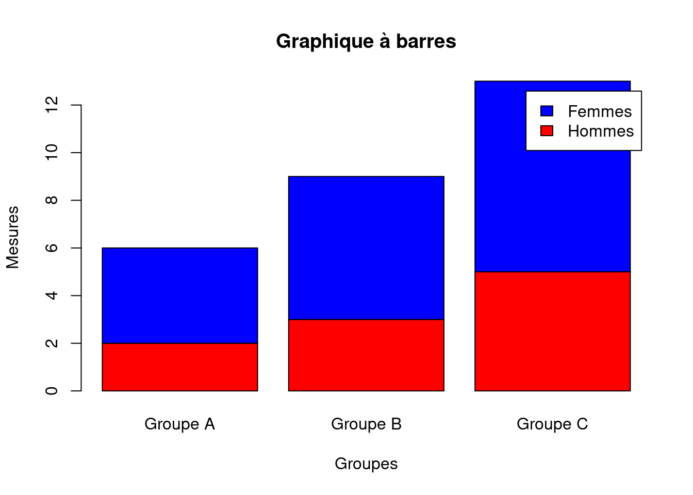
Dans cet exemple, la fonction barplot() crée un graphique à barres à partir de la matrice de données mat. La fonction rownames() et colnames() sont utilisées pour nommer les lignes et les colonnes de la matrice, qui seront utilisées comme étiquettes d’axe dans le graphique. La fonction barplot() utilise les arguments optionnels pour personnaliser le graphique, tels que les couleurs des barres, les étiquettes des axes, la légende, etc.
6.2.6 La fonction boxplot()
La fonction boxplot() est utilisée pour créer un graphique en boîte à moustache. Le graphique affiche la distribution d’un ensemble de données numériques à l’aide de cinq mesures statistiques : la médiane, les quartiles supérieurs et inférieurs, ainsi que les valeurs min et max. Les “moustaches” représentent des intervalles de confiance pour la distribution de données.
La fonction boxplot() prend en entrée un ou plusieurs vecteurs de données numériques, où chaque vecteur représente une variable à comparer. Les arguments optionnels peuvent être utilisés pour personnaliser le graphique, tels que les couleurs, les étiquettes des axes, la légende, etc.
Voici un exemple d’utilisation de la fonction boxplot() pour créer un boxplot à partir d’un vecteur de données “x”:
# Créer un vecteur de données
x <- c(10, 20, 30, 40, 50, 60, 70, 80, 90, 100)
# Créer un graphique en boîte
boxplot(x, main = "boîte à moustache", ylab = "Valeurs")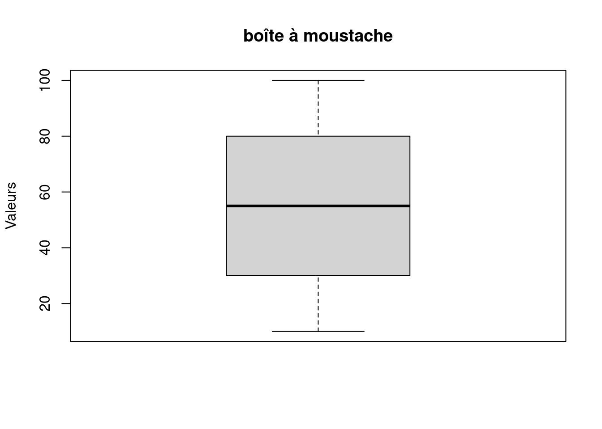
Dans cet exemple, la fonction boxplot() crée un graphique à partir du vecteur de données “x”. La fonction utilise les arguments optionnels pour personnaliser le graphique, tels que le titre du graphique et l’étiquette de l’axe y. Les cinq mesures statistiques du vecteur de données sont représentées par la boîte et les moustaches. La boîte représente le quartile supérieur et le quartile inférieur, avec une ligne à l’intérieur représentant la médiane. Les moustaches représentent les valeurs minimum et maximum, avec des points éventuels représentant des valeurs aberrantes.
6.2.7 Les fonctions de tracé de courbes de niveau
Les fonctions de tracé de courbes de niveau permettent de représenter des données en 3 dimensions sur un plan en deux dimensions. Cela se fait en créant des courbes de niveau qui relient les points d’une surface ayant la même valeur.
Sous R, les fonctions de tracé de courbes de niveau les plus courantes sont contour() et filled.contour().
La fonction contour() trace des courbes de niveau sur un graphique en deux dimensions. Elle prend en entrée une matrice de données ainsi que des arguments supplémentaires qui définissent le nombre et les niveaux de courbes de niveau à afficher.
La fonction filled.contour() trace également des courbes de niveau, mais remplit les zones entre les courbes de niveau avec des couleurs pour indiquer les variations de valeur de la surface. Cette fonction prend en entrée une matrice de données ainsi que des arguments supplémentaires qui définissent les niveaux et la palette de couleurs à utiliser pour remplir les zones entre les courbes de niveau.
Voici un exemple avec le jeu de données volcano qui contient des données topographiques sur le volcan Maunga Whau (New Zealand) selon une grille régulière de 10m x 10m.
data(volcano)
# Color palette
cols <- hcl.colors(10, "YlOrRd")
contour(volcano,
col = cols)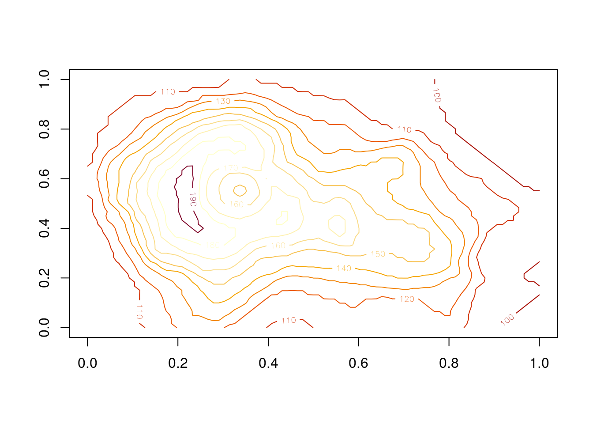
filled.contour(volcano,
nlevels = 10)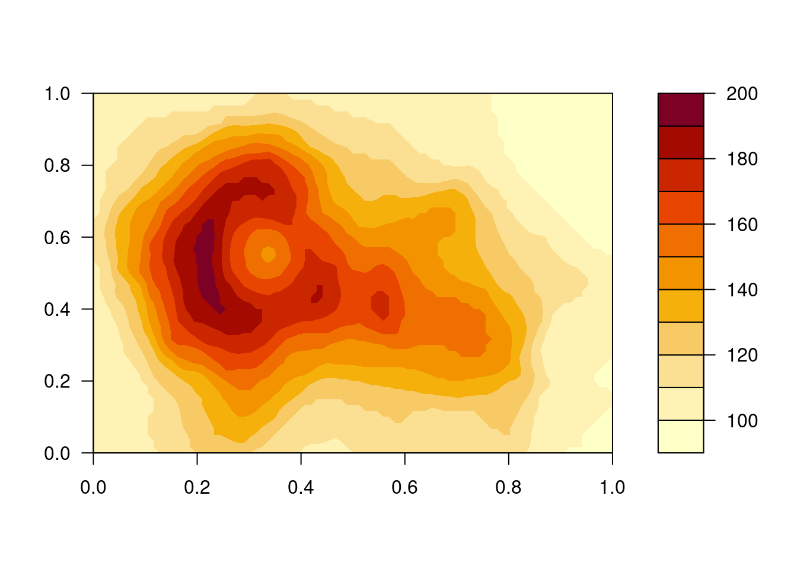
6.2.8 Les fonctions de cartographie
Les fonctions cartographiques sous R permettent de créer et de manipuler des cartes géographiques. Voici quelques-unes des fonctions les plus couramment utilisées :
maps: cette fonction permet de tracer des cartes géographiques en utilisant des données du package maps. Il est possible de personnaliser les couleurs, les frontières et les légendes de la carte.
mapdata: cette fonction permet de télécharger des données géographiques pour une région spécifique. Les données peuvent être utilisées pour tracer des cartes en utilisant la fonction maps.
ggmap: cette fonction permet de superposer des données sur des cartes géographiques provenant de Google Maps. Elle peut être utilisée pour créer des cartes interactives.
ggplot2: ce package offre de nombreuses fonctionnalités pour la création de cartes géographiques en utilisant la librairie ggplot2. Il permet de créer des cartes thématiques avec des couleurs et des symboles personnalisés.
leaflet: cette fonction permet de créer des cartes interactives à l’aide de la bibliothèque JavaScript Leaflet. Elle offre des options pour personnaliser les marqueurs, les popups et les couches de carte.
raster: cette fonction permet de manipuler des données raster telles que des images satellites et de créer des cartes à partir de ces données. Elle offre des fonctions pour la classification, la visualisation et la superposition de données raster.
sp: ce package offre des fonctionnalités pour la manipulation de données géographiques vectorielles. Il permet de créer des cartes thématiques et d’ajouter des données provenant de sources externes.
Ces fonctions cartographiques peuvent être combinées pour créer des cartes géographiques personnalisées et interactives en fonction des besoins de l’utilisateur.
library(maps)##
## Attachement du package : 'maps'## L'objet suivant est masqué depuis 'package:plyr':
##
## ozonelibrary(mapdata)
library(ggplot2)
# Charger les données de population par ville
data("world.cities")
# Extraire les villes françaises avec une population supérieure à 100 000
france.cities <- subset(world.cities, country.etc == "France" & pop > 100000)
# Tracer la carte de la France
fr.map <- map(database = "france", fill = TRUE, col = "lightblue", bg = "white", lty = 0,
ylim = c(40, 54), xlim = c(-5, 10))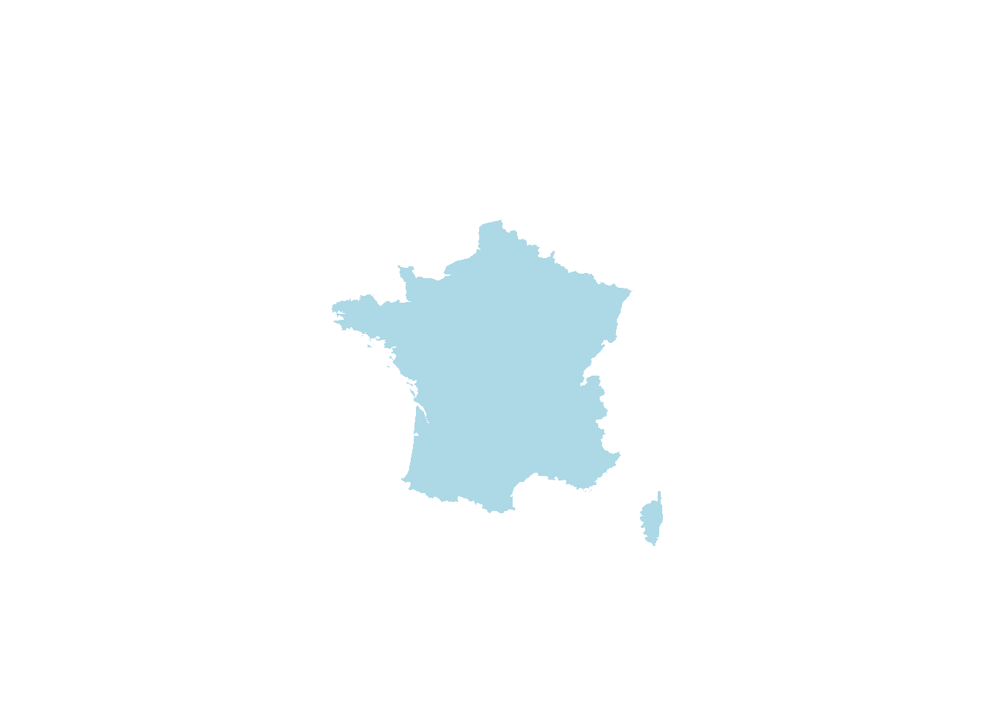
# Créer un graphique ggplot avec la carte de la France
# Ajouter des cercles proportionnels pour chaque ville en fonction de leur population
ggplot() +
geom_polygon(data = fr.map, aes(x = long, y = lat, group = group),
fill = "lightblue", color = "black") +
geom_point(data = france.cities, aes(x = long, y = lat, size = pop),
color = "red", alpha = 0.8) +
labs(size = "Taille de la population")+
coord_fixed(xlim = c(-5, 10), ylim = c(40, 54)) +
scale_size_continuous(range = c(1, 10)) 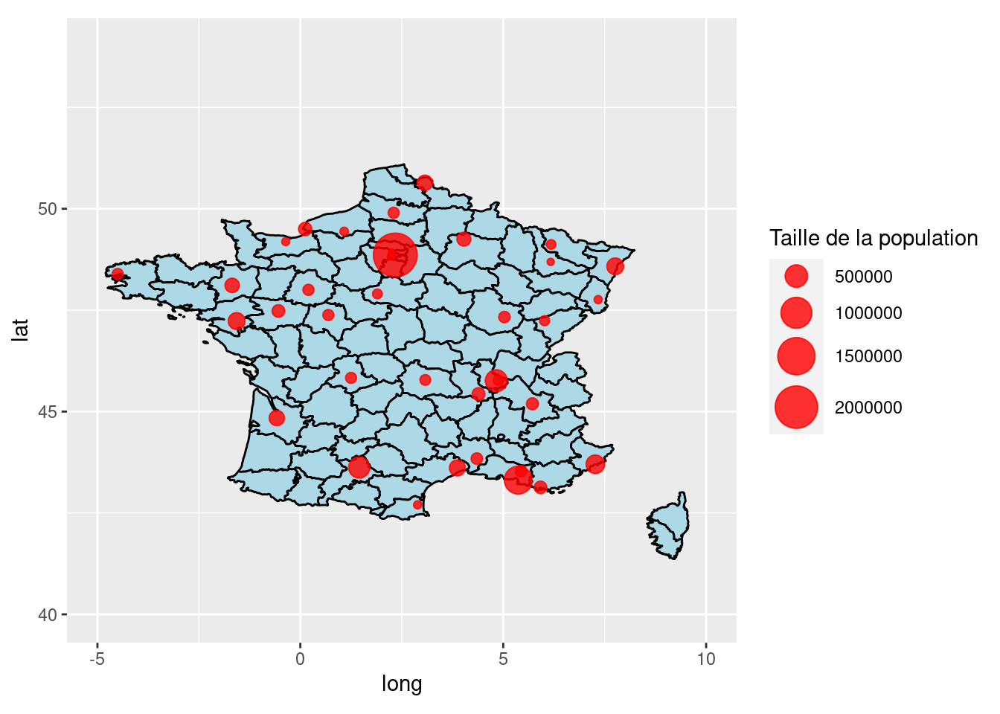
Exercice 4:
Créez un graphique en nuage de points pour représenter la relation entre le poids et la consommation de carburant de différentes voitures en utilisant le jeu de données mtcars.
Créez un graphique en barres empilées pour représenter la répartition des espèces de fleurs dans le jeu de données iris.
Créez un graphique en boîtes pour comparer les espérances de vie dans différents pays dans le jeu de données gapminder.
Créez un graphique en secteurs pour représenter la répartition des habitants par continent dans le jeu de données gapminder.